LDaCA Technical Architecture Update
2025-09-24
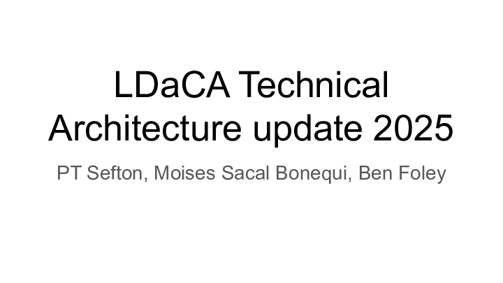
This presentation is an update on the Language Data Commons of Australia (LDaCA) technical architecture for the LDaCA Steering Committee meeting 22 August 2025, written by members of the LDaCA team; me, Moises Sacal, and Ben Foley edited by Bridey Lea. This version has the slides we presented and our notes, edited for clarity. There's a more compact version of this up over on the LDaCA site
The architecture for LDaCA has not changed significantly for the last couple of years. We are still basing our design on the PILARS protocols.
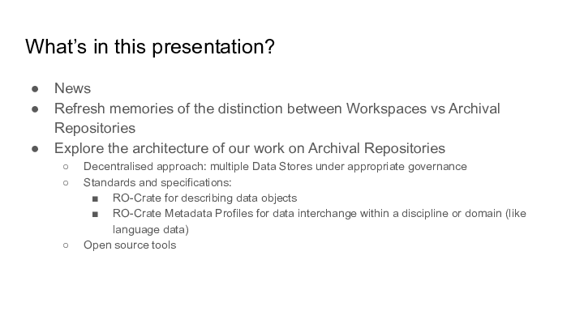
This presentation will report on some recent developments, mostly in behind-the-scenes improvements to our software stack. It will give a brief refresh of the principles behind the LDaCA approach, and talk about our decentralised approach to data management and how it fits with the metadata standards we have been developing for the last few years. We will also show how the open source tools used across LDaCA’s network of collaborators are starting to be harmonised and shared between services, reducing development and maintenance costs and improving sustainability.
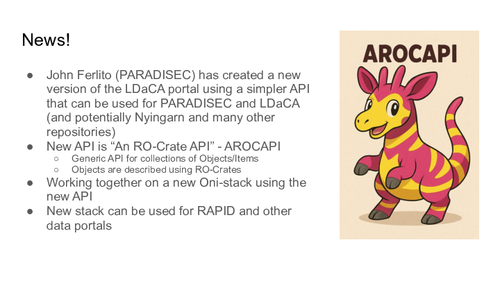
The big news is a new API a new RO-Crate API (“An RO-Crate API” - AROCAPI ) which offers a standardised interface to PILARS-style storage where data is stored as RO-Crates, organized into "Collections" of "Objects" according to the Portland Common Data Model (PCDM) specification, which is built-in to RO-Crate.
A concrete example is that PARADISEC will implement different authentication routes (using the existing “Nabu” catalog) than the LDaCA data portal which uses CADRE ([REMS])(https://www.elixir-finland.org/en/aai-rems-2/).
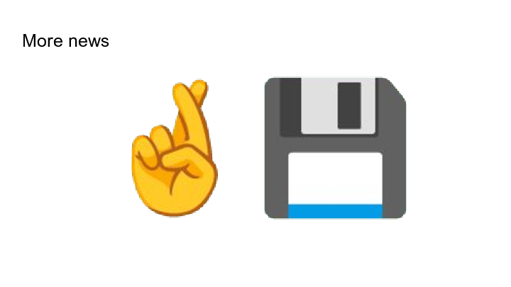
Promising discussions are taking place with one of our partners about taking on LDaCA data long-term (instead of having to distribute the collections across partner institutions). This would give a consolidated basis for a Language Data repository and a broader Humanities data service.
![collect & :: organise :: Language data is rarely organised or described in reusable ways, if it's described at all :: conserve :: A lot of language data is at risk of being lost forever :: find :: It’s difficult to know what language data exists and where to find it :: Ad hoc tools, analysis and annotation methods are used, lacking reproducibility :: Shared tools can process, analyse, reuse, repurpose, annotate, visualise and enhance data at scale :: access :: Processes for granting permissions and getting access to data are either absent or aren’t easy to understand or apply :: analyse :: Standards and tools are available and being applied by data stewards :: Good governance and standardised, distributed storage of data helps :: preserve and return data :: Discovering and locating language data is easy via linked portals :: Access controls are in place and easy to use, so that data access can be given to the right people :: LDaCA Execution Strategy Overview :: Strengthen the data management skills of language worker communities :: Develop shared tools, standards and technical infrastructure to help data stewards care for data for the long term :: Build data portals with useful search functions and lightweight technical structures :: Create guidance for data stewards to document and grant access and reuse rights :: Support language communities to gain greater control over their language data :: Develop tools for data and metadata conversion, processing, analysis, annotation, visualisation, and enrichment :: Develop and guide the implementationof local and national policy and governance toolkits :: Provide examples and training for research at scale :: guide :: Best practice advice and training for working with language data is available from a single source which is easy to find :: Guidance and training for collecting, handling, using and analysing data are scattered and hard to find :: Version: 2025-07-31 :: > analysis overview :: Starting state (2021) :: Desired state (2028) :: Activities ::](Slide04.png "Slide: 4")
This slide shows the LDaCA execution strategy. All of the strands (Collect & organise, Conserve, Find, Access, Analyse, Guide) are relevant to the technical architecture.

From the very beginning of the project, the LDaCA architecture has been designed around the principle that to build a “Research Data Commons” we need to look after data above all else. We took an approach that considered long-term data management separately from current uses of the data.
This resulted in some design choices which are markedly different from those commonly seen in software development for research.
Effort was put into:
- Organising and describing data using open specifications BEFORE building features into applications;
- Designing an access-control system with long-term adaptability in mind (read the story about that as presented at eResearch Australasia 2022);
- Batch-conversion of existing data to the new approach; and
- Developing a metadata framework and tools to implement it.
With this foundation, and the new interoperability we gain from our collaboration on the AROCAPI API, we are well placed to move into a phase of rapid expansion of the data assets building workspace services. For example:
- The new LDaCA analytics forum will drive analytical workspaces
- Work by the LDaCA technical team will continue to improve data preparation workspaces, possibly by collaborating to adapt the Nyingarn Workspace for general purpose use.
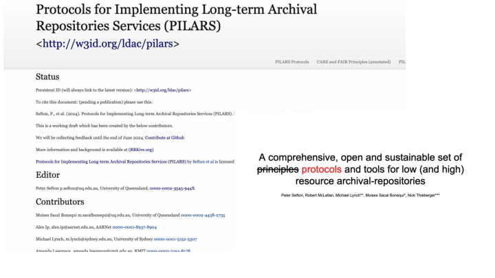
In 2024, we released the Protocols for Implementing Long Term Archival Repositories (PILARS), described in this 2024 presentation at Open Repositories. The first principle of PILARS is that data should be portable, not locked in to a particular interface, service or mode of storage. Following the lead of PARADISEC two decades ago, the protocols call for storing data in commodity storage services such as file systems or (cloud) object storage services. This means that data is available independently of any specific software.
![:: :: collect & :: organise :: Language data is rarely organised or described in reusable ways, if it's described at all :: conserve :: A lot of language data is at risk of being lost forever :: find :: It’s difficult to know what language data exists and where to find it :: Ad hoc tools, analysis and annotation methods are used, lacking reproducibility :: Shared tools can process, analyse, reuse, repurpose, annotate, visualise and enhance data at scale :: access :: Processes for granting permissions and getting access to data are either absent or aren’t easy to understand or apply :: analyse :: Standards and tools are available and being applied by data stewards :: Good governance and standardised, distributed storage of data helps :: preserve and return data :: Discovering and locating language data is easy via linked portals :: Access controls are in place and easy to use, so that data access can be given to the right people :: LDaCA Execution Strategy Overview :: Strengthen the data management skills of language worker communities :: Develop shared tools, standards and technical infrastructure to help data stewards care for data for the long term :: Build data portals with useful search functions and lightweight technical structures :: Create guidance for data stewards to document and grant access and reuse rights :: Support language communities to gain greater control over their language data :: Develop tools for data and metadata conversion, processing, analysis, annotation, visualisation, and enrichment :: Develop and guide the implementationof local and national policy and governance toolkits :: Provide examples and training for research at scale :: guide :: Best practice advice and training for working with language data is available from a single source which is easy to find :: Guidance and training for collecting, handling, using and analysing data are scattered and hard to find :: Version: 2025-07-31 :: Starting state (2021) :: Desired state (2028) :: Activities ::](Slide07.png "Slide: 7")
For the rest of this presentation, we will focus on recent developments in the “Green zone” – the Archival Repository functions of the LDaCA architecture. We will not be talking about the analysis stream as that will be discussed in detail in the newly established Analytics Forum.
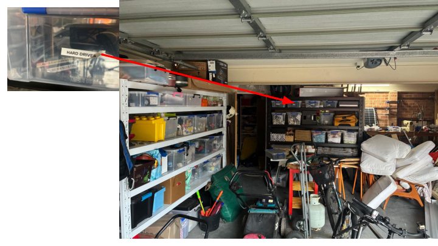
I (PT) wanted to throw in a personal story here. This is an unstaged picture of my (PT Sefton’s) garage this morning. The box of hard drives contains some old backups of mine just in case, and also my late father Ian Sefton’s physics education research data, stuff like student feedback from lab programs in the 80s trialling different approaches to teaching core physics concepts and extensive literature reviews. These HAVE been handed on to his younger colleagues but could easily have ended up only available here in this garage. I wanted to remind us all that this project is a once in a career opportunity to develop processes for organising data and putting it somewhere alongside other data in a Data Commons where (a) your descendants are not made responsible for it and put it in a box in the shed or chuck it in a skip; and (b) others can find it, use it (subject to the clear “data will” license permissions you left with the data to describe who should be allowed to do what with it), and build on your legacy.
Remember:
- Storage is not data management (particularly if the storage is a shopping bag full of mistreated hard drives)
- Passing boxes of storage devices hand to hand is NOT a good strategy to conserve data
- Hard drives are not archives
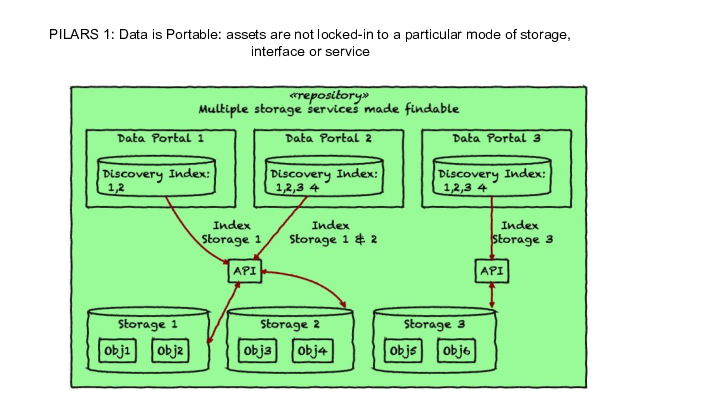
The first principle of PILARS is that data should be portable, not locked-in to a particular mode of storage, interface or service. Following the lead of PARADISEC two decades ago, the protocols call for storing data in commodity storage services such as file systems or (cloud) object storage services. This means that data is available independently of any specific software. This diagram is a sketch of how this approach allows for a wide range of architectures – data stored according to the protocols can be indexed and served over an API (with appropriate access controls). Over the next few slides, we will show some of the architectures that have emerged over the last couple of years at LDaCA.
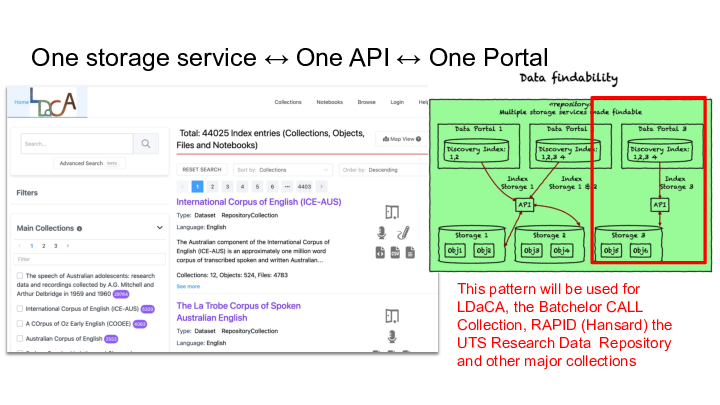
The first example is the LDaCA data portal, which is a central access-controlled gateway to the data that we have been collecting.
NOTE: during the project it has been unclear how we would look after data at the conclusion of the project. No single organisation had put up its hand up to host data for the medium to long term, but as noted in the News section we have had some positive talks with one of our partner institutions indicating that they may have an appetite for hosting data that otherwise does not have a home, and/or providing some redundancy for at-risk collections where data custodians are comfortable with a copy residing at the university (we won’t say which one until negotiations are more advanced).
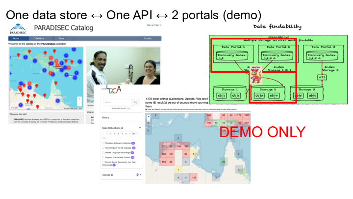
This slide shows a demo of two different portal designs accessing the same PARADISEC data, which has been accomplished using the new AROCAPI API. The API will speed development of new PILARS-compliant Research Data Commons deployments, using a variety of storage services and portals that can be adapted and "mixed and matched" via a common API.

Alongside the data portal, we have explored other ways of sharing data assets, including local distribution via portable computers such as Raspberry Pi with a local wireless network. We have also discussed establishing regional cooperative networks where communities reduce risk by holding data for each other.
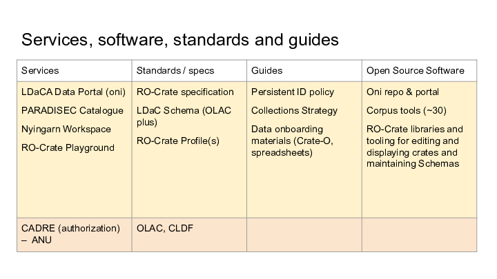
With our partners, we have developed and adapted a suite of other technical resources, including:
- Oni portal software for mid-to-large deployments. Version 1 is live and Version 2 is currently under development with PARADISEC, involving a new shared API and code base that can be used across LDaCA and beyond.
- REMS overlaid with CADRE to manage access control for identified users. A service agreement between LDaCA and CADRE has been signed, to manage access control. REMS is still the backend of this tool, but CADRE’s wrapper makes it more user-friendly. CADRE version 2 will replace the admin component of REMS and is in the testing phase now.
- ‘Corpus tools’ for migrating data from existing formats to LDaCA-ready RO-Crates are available on github. These reduce the cost of developing new migration tools by adapting existing corpus tools, provide reproducible migration processes and are a strong foundation for quality assurance checks.
- Software libraries for managing data in RO-Crate, maintaining schemas available on our github organisation.
- RO-Crate preparation tools, including:
- Crate-O (now included in Nyingarn)
- Crate-O-compatible spreadsheet templates for DIY data import and supporting familiar Excel-based workflows — documented on the LDaCA website
- LaMeta, which now has RO-Crate support
- RO-Crate playground to experiment with and validate metadata.
- Data preparation workspaces:
- Nyingarn (focussed on creating searchable text from manuscripts)
- Our next steps will involve a multi-modal workspace, for audio and video transcription.
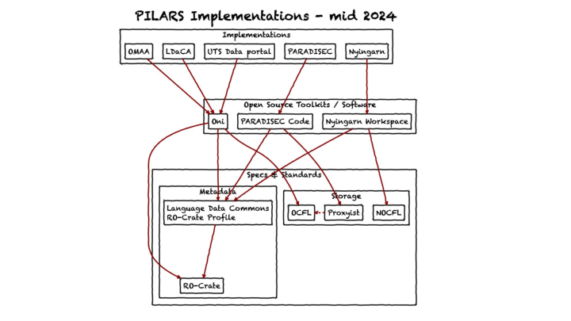
This diagram shows how the PILARS principles have been implemented by different organisations. Each example uses open source software, and accepted standards for metadata and storage, meaning that data is portable.
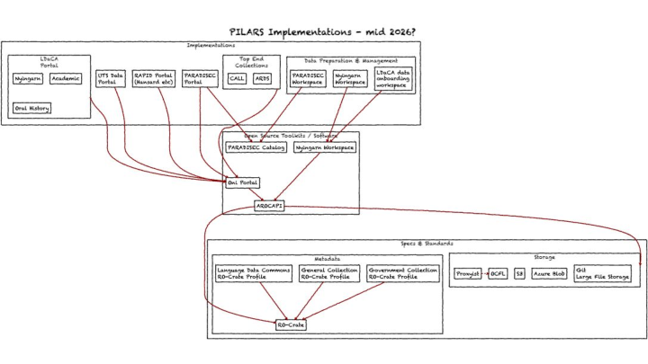
This slide shows one potential view of LDaCA’s architecture in 2026. There may be an opportunity to deepen the collaboration between the UQ LDaCA team and the PARADISEC team at Melbourne, sharing the development of more code.
For example, Nyingarn’s incomplete repository function could be done by a stand alone instance of the Oni portal, or as shown here, added to the LDaCA portal as a collection.
Likewise the non-existent user-focussed data preparation functions of Nyigarn, where a user can describe an object and submit it could be generalized for use in LDaCA.
Changes shown in this diagram:
- Remove the “NOCFL” storage service from Nyingarn and replace with either OCFL or an Object Store solution
- Upgrade Nyingarn workspace to be a generic data onboarding app for all kinds of data (rather than only manuscript transcription focus)
To conclude, we have an opportunity now to consider how the distributed LDaCA technical team can collaborate on key pieces of re-deployable infrastructure. This work is having an impact in other Australian Research Data Commons (ARDC) co-investments.